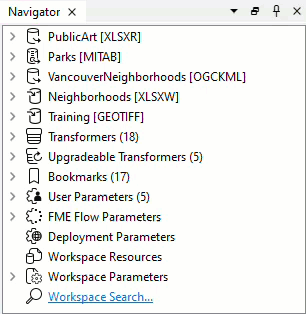
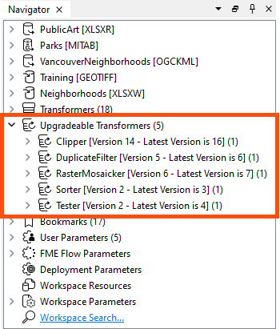
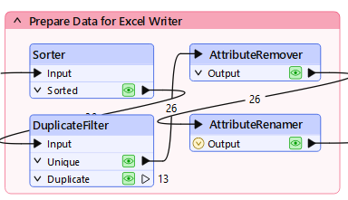
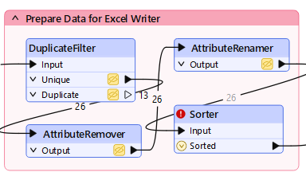
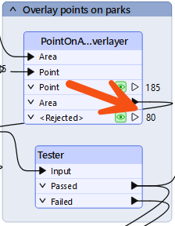

Learning Objectives
After completing this lesson, you’ll be able to:
- Improve performance by reducing the amount of data being read.
- Improve performance by adjusting the order of writers in a workspace.
- Improve performance by reordering transformers to get the best performance.
- Improve performance by using performance-related transformer parameters.
- Improve performance by adjusting the order of readers in a workspace.
Resources
- Starting workspace
- For Safe Software-hosted training courses, you can find this on your virtual machine here: C:\FMEData\Workspaces\UseDataIntegrationBestPractices\exercise-improve-performance.fmw
- Complete workspace
- C:\FMEData\Workspaces\UseDataIntegrationBestPractices\exercise-improve-performance-complete.fmw
- Orthophotos.zip
- C:\FMEData\Data\Orthophotos.zip
- VancouverNeighborhoods.kml
- C:\FMEData\Data\Boundaries\VancouverNeighborhoods.kml
Exercise
The provincial government has given the city a grant to fund new public art in parks.
Your colleague has created a workspace to analyze the amount of art in each city park, and we are carrying out a code review to ensure that the workspace is efficient and well-designed. In another course, we inspected the workspace to see what it produced, deconstructed the log file, and ran the workspace multiple times to assess the relative performance of each component.
In this exercise, we'll make some specific changes to improve performance.
1) Open and Run Workspace
Open the starting workspace in FME Workbench (2024.1 or later). Turn on feature caching and run the workspace with default user parameter values.
2) Check Reader Methodology
First, check if the readers are correctly configured and don't read any excess data.
- Parks
- We wish to identify parks without artwork, so we need these park features.
- Neighborhoods
- Again, we need all of these features.
- Public Art
- Again, we need all of these features.
- It's important to note that artworks fall in one of six neighborhoods, matching the same six in the Neighborhoods dataset. There are no artworks outside one of these neighborhoods or neighborhoods where we have artworks, so no excess data is being read.
- Orthophotos
- We're reading all the image files for the entire city. Are there any files we don't need?
To check the orthophoto coverage, start FME Data Inspector (it will be easier than the Visual Preview window). You can open FME Data Inspector from the Windows Start menu > FME Form > FME Data Inspector.
Select File > Open Dataset and set the files to open as follows:

If the orthophotos reading takes too long, you can download the .zip file, extract it, and select the TIF files in the extracted folder. Reading the data locally will be faster.
The Feature Type Name(s) parameter ensures the Data Inspector lists files by name.
Now select File > Add Dataset and set that dialog up as follows:
Now, you can check whether any GeoTIFF tiles fall outside the extent of the neighborhoods:

Map tiles © Stadia Maps, © OpenMapTiles, © OpenStreetMap contributors, © Stamen Design
Because some orthophotos do not overlap the neighborhood boundaries, our workspace reads more orthophotos than is necessary.
3) Switch GeoTIFF Reader to FeatureReader
It appears that FME is reading GeoTIFF files unnecessarily. This causes a performance hit, especially when feature caching is turned on. We could select the files we want to read, but if the neighborhoods dataset changed, this list might not be correct.
So, return to FME Workbench.
Delete the Orthophotos GeoTIFF format reader from the workspace. Add a FeatureReader transformer in its place. Make the reprojected Neighborhoods data the Initiator (create a separate connection from the Reprojector_2's Reprojected port):

Open the FeatureReader parameters. Set the Format to GeoTIFF and set https://s3.amazonaws.com/FMEData/FMEData/Data/Orthophotos.zip as the Dataset.
If you are taking a Safe Software-hosted training course, it will be faster to select all the files in C:\FMEData\Data\Orthophotos instead.
Set the Spatial Filter parameter to Initiator OGC-Intersects Result:

Click OK. The FeatureReader will now have a GEOTIFF output port. Connect this to the RasterMosaicker:

If we run the workspace now, the FeatureReader will output 48 features. This is more than we had before (40) and occurs because GeoTIFF tiles that overlap two neighborhoods are being read twice.
So, add a Dissolver transformer between Reprojector_2 and FeatureReader. This will consolidate the neighborhoods into a single feature and ensure each GeoTIFF is only read once. Re-run the workspace:

Now, we only read 27 features, which is the correct amount. We are reading fewer photos, so the workspace is performing better.
4) Check Writer Order
The most straightforward writer improvement we might make is to change the order of the writers. Currently, the Excel spreadsheet is written first. This means that GeoTIFF files—which are large—are being cached instead of the smaller Excel file.
So, adjust the order of the writers so that the GeoTIFF writer comes first in the Navigator:

Re-run the workspace. Although the workspace wasn't slow to start with, you should notice it now runs slightly faster, using less memory.
Another writer feature to consider is whether the Excel dataset is being deleted/recreated or just emptied of data. In theory, it might be (very marginally) quicker to empty the sheets rather than create the whole spreadsheet from scratch.
To try this, change the writer parameter Overwrite Existing File to No and change the writer feature type parameter for Truncate Existing Sheet to Yes:

It's unlikely to make a huge performance improvement, but you should consider differences like these when reviewing a workspace for performance. You would especially want to consider this question when writing to a database table with an index (more on that later).
Now, let's look into transformers. This is where we can make a lot of different changes. The first is to check for old transformer versions. Notice in the Navigator window that four transformers are listed as "Upgradeable":

In turn, right-click each entry and choose Upgrade Transformer.
You will be prompted with a warning; click Upgrade:

A dialog will open to show the changes in GUI to the transformer, and you can click the Show Changes button to get a written list of changes:

Upgrading transformers only sometimes makes them operate faster—some changes are functional or cosmetic—and might slightly change their results. Therefore, upgrading all transformers is only advisable after checking what the upgrade involves.
However, in this case, both transformers should be safe to upgrade, which may even improve performance. So go ahead and upgrade all the transformers.
You can right-click Upgradable Transformers and choose Upgrade All Transformers if you prefer, but for practice's sake, we recommend upgrading individually while you learn FME.
The Tester transformer uses bulk mode. You'll remember, however, that this might change the order of features emerging from the transformer.
Do you see any part of the workspace that relies on feature order? If not, you can safely upgrade this transformer to its newest version for a performance boost. By default, the new parameter Advanced > Preserve Feature Order is set to Across Output Ports. This preserves feature order but does not allow the Tester to take advantage of bulk mode. To improve performance, change it to Per Output Port.
Learn More
Look at the bookmark labeled Prepare Data for Excel Writer:

Inspect the transformers, and you will see that they sort the data into order for writing. Then, they filter out unnecessary features and remove unnecessary attributes.
This is not the correct order to maximize performance: the sorting action processes unnecessary features with unnecessary attributes. Remember, the essential order is Filter-Remove-Action.
So, move the Sorter transformer after the AttributeRenamer:

Notice that the Sorter transformer is now flagged as incomplete. Inspect the parameters, and you'll notice that the attribute _overlaps no longer exists; the AttributeRenamer renamed it ArtWorks.
So change the Sorter to sort by ArtWorks, and the transformer will work again.
If the features coming into the Sorter were already grouped by one attribute, we could group by that attribute and sort by another to improve performance. But in this case, that would not work.
The other thing to consider is whether data can be filtered or removed earlier in the workspace. The two filtering transformers in this workspace are the Tester and DuplicateFilter. Can we move these to earlier in the workspace? Can the Tester transformer be moved? Note your answer: you'll need it for the quiz.
Can the AttributeRemover and AttributeRenamer transformers be moved? The AttributeRenamer can't be moved because it renames the _overlaps attribute, an action that can only happen here. However, removing attributes could be carried out much earlier.
The most straightforward technique is to add an AttributeRemover after every reader whose attributes can be removed:

Remove the existing AttributeRemover, add an AttributeRemover to each input that can be cleaned, and remove whatever attributes are unnecessary to the workspace. You can tell if you remove a necessary attribute if a downstream transformer or writer feature type is flagged as incomplete, with a red port on the expanded writer feature type.
Note that the fme_feature_type attribute used on the GeoTIFF writer isn't required.
We have removed all unnecessary attributes from the workspace as soon as possible.
An alternative solution for database-type formats is not to read the attributes at all. In our workspace, the Excel reader is capable of this. You could open the reader feature type, change the Attributes to Read to Exposed Attributes and uncheck Name and Title.
If you do this, then you do not need the AttributeRemover.
Several transformers have parameters specifically for performance benefits. These are often labeled as Complete Groups or <Features First>.
Check the transformers in this workspace. The two of particular interest are the Clipper and PointOnAreaOverlayer. Both of them have a Group Processing and a Features First parameter:

The Group Processing parameter doesn't apply because neither transformer uses a Group By. However, the Multiple Clippers, Clippers Arrive First and Areas First options are of interest. If we set these options, we can get a performance boost, but we do have to confirm that either Clippers or Areas will be the first features to arrive.
In the PointOnAreaOverlayer, change the Areas First parameter to Yes. Re-run the workspace (either turn off caching or re-run the entire workspace). Notice that all Area features exit as <Rejected> features. They are rejected because they are not first!

One reason might be that the MapInfo park features are read after the Excel records. So, in the Navigator window, move the Parks reader to the top of the list:

Re-run the entire workspace. Notice that the park features are now first. This part of the workspace should be working more efficiently now.
Try the same action on the Clipper transformer to see if Clipper features are first so that the Clippers Arrive First parameter can be set to Yes (Advanced).
8) Re-Run Workspace
With Feature Caching off, re-run the entire workspace. Check if the log results show that the workspace is quicker and more memory efficient than it was before. The code review of your colleague's workspace is complete.
Overall, the difference might be very slight. The workspace may not be hugely faster or more memory efficient. However, it is better designed than the original workspace. This makes it more scalable and will help teach your colleague techniques that might have a more significant effect elsewhere.